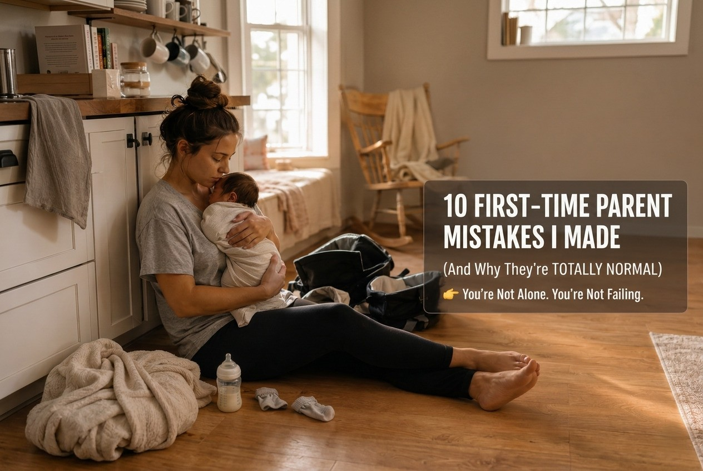
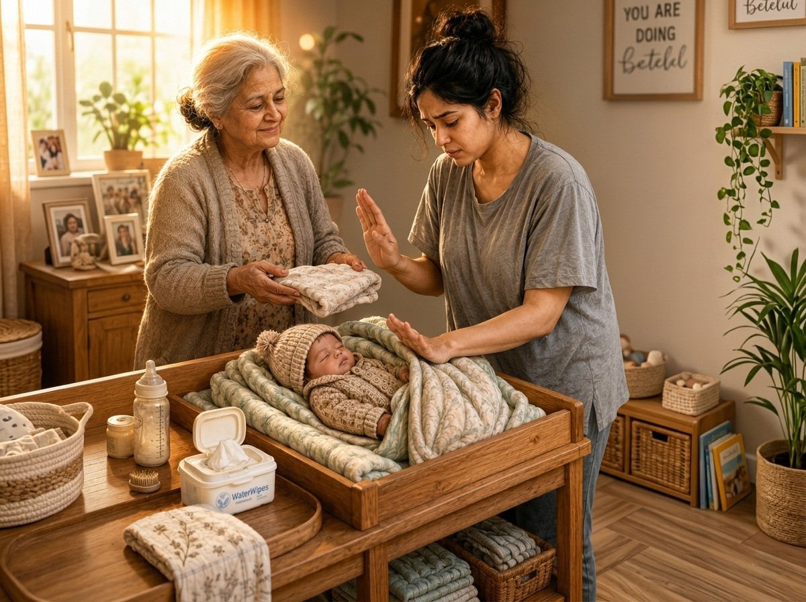
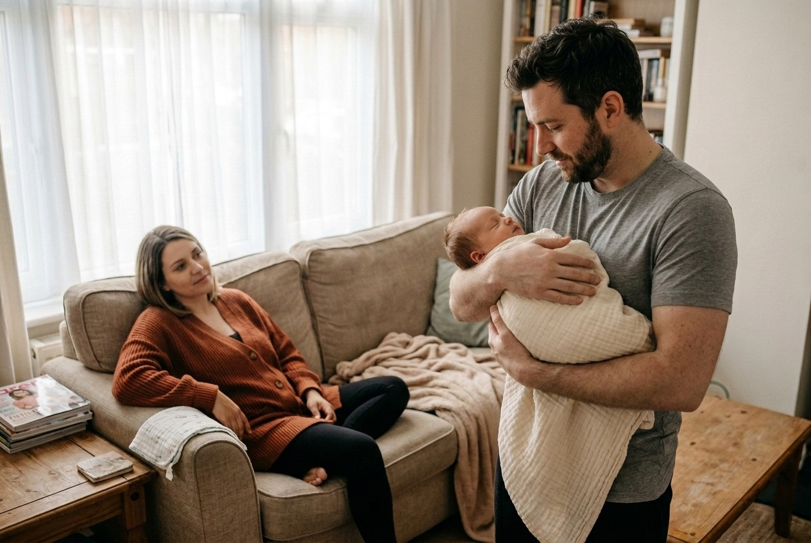
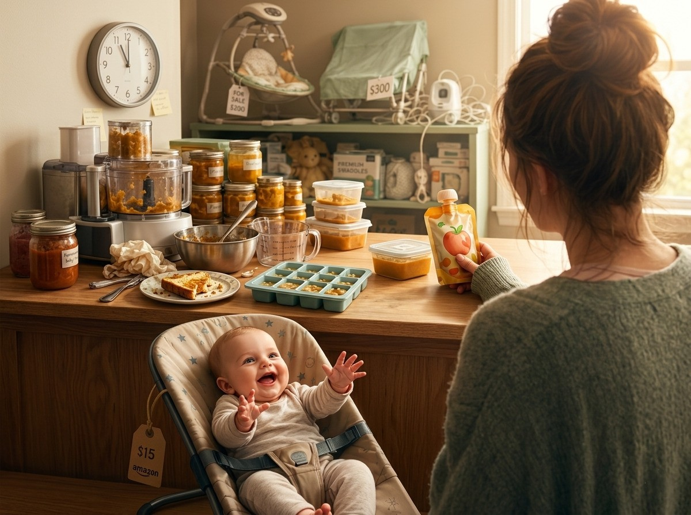
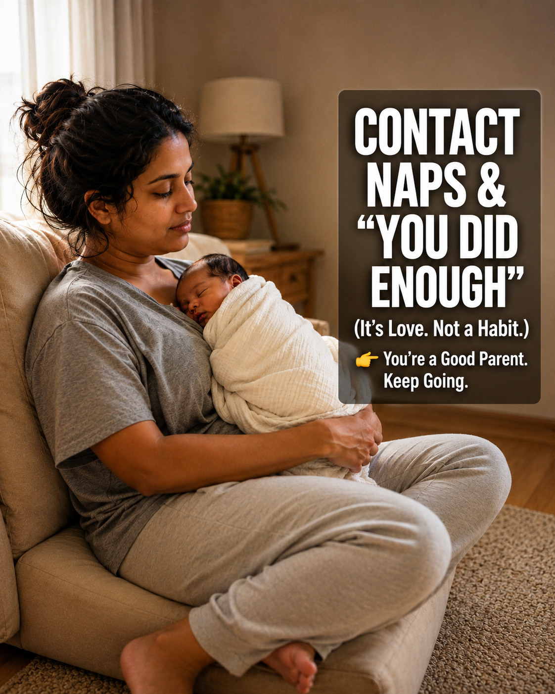

10 First-Time Parent Mistakes I Made (And Why They're Totally Normal)
The kitchen floor crying. The $200 swing. The nail-clipping incident. My honest list — and why none of it makes you a bad parent.
Read the honest listThe Night I Realized Nobody Warned Me About Any of This
The first time I held my baby, I genuinely believed some kind of maternal superpower would just... switch on. Like a light. Like a download.
It didn't.
What actually happened was this: I wrapped my newborn son in so many layers he looked like a tiny panicked burrito. I spent $200 on a motorized swing that he refused to even acknowledge. And one afternoon, I clipped the edge of his finger while trimming his nails, saw one microscopic drop of blood, and then sat on the kitchen floor crying for two straight hours, absolutely convinced I was the worst mother in human history.
If any of that sounds familiar — please. Take a breath.
You are not failing. You are learning. And there is a colossal difference between those two things.
A while back, a first-time mom named Beth Page posted a TikTok about her own list of parenting slip-ups. It went everywhere. And the reason it did wasn't because it was shocking — it was because thousands of parents showed up in the comments saying the same thing: "I thought I was the only one."
We're not. We never were. We just stopped talking about it.
So here's my honest list — ten real mistakes from my first year as a mom, why they happen, and why you need to stop punishing yourself for them.
Quick Snapshot: The Most Common First-Time Parent Mistakes
Scanning on three hours of sleep? Here's the short version:
- Overdressing babies (and accidentally overheating them)
- Refusing every offer of help until you're completely burned out
- Leaving babies on sofas or counters assuming they won't move
- Hovering over every person who tries to hold your baby
- Treating store-bought pouches like a personal moral failure
- Buying every expensive gadget — and watching them ignore all of it
- Letting everyone else's advice drown out your own instincts
- The nail-clipping incident (it happens to almost everyone)
- Guilt-tripping yourself over contact naps
- Only counting your mistakes and never your wins
Not one of these is a character flaw. Every single one is a sign that you're paying attention, you're exhausted, and you care deeply. Let's talk through them properly.
Mistake 1 Overdressing the Baby
Two weeks in, I had my son wearing a onesie, a sweater, a hat, and was questioning whether four blankets were truly enough. The thermostat said 72°F. I did not trust the thermostat.
When I checked on him later, the back of his little neck was completely soaked in sweat. I panicked. I thought I'd broken him.
This is one of the most common newborn mistakes out there, and it makes complete sense why we do it. We are so ferociously protective in those early weeks that we overcompensate. The problem is that babies can't regulate their own temperature yet, which makes overheating a real concern — particularly during sleep.
The rule I wish someone had tattooed on my hand from day one: babies generally need one layer more than you're wearing. That's it.
Feel the back of their neck or the base of their head. Sweaty? Remove one layer. A sleep sack is safer and simpler than stacking blankets.
Mistake 2 Refusing Help Until I Was Running on Empty
When my mom offered to fold laundry, I said no. When my best friend offered to hold the baby so I could take a shower that lasted longer than ninety seconds, I also said no. I had somehow convinced myself that needing help was the same as admitting I couldn't handle motherhood.
I found out later that something like a quarter of first-time mothers feel this way — low confidence, significant stress, the whole package — in the first six months. A quarter of us. That's not weakness. That's just the reality of learning an entirely new identity while running on no sleep and recovering from childbirth.
Motherhood was never designed to be a solo sport. It was designed for a village.
The next time someone offers help, say yes. Say yes before they finish the sentence if you have to.

Mistake 3 "He Won't Move. He Can't Even Roll Yet."
I put my baby on the center of the living room sofa — just for a second — to grab a fresh diaper. Thirty seconds, tops. He couldn't even roll over yet. What could possibly happen?
He wiggled. Just enough. And slid right off the edge onto his face.
He cried for about a minute. I cried for an hour, checked him approximately forty times, and called the pediatrician in a full panic. He was completely fine. My confidence was not.
That fall happened because I was sleep-deprived and operating on assumptions. It taught me something I will never forget: elevated surfaces are non-negotiable, no matter how still you think your baby is. The floor, a blanket on the carpet, or a safely buckled infant seat — those are your only truly safe options when you step away.
If your baby falls and shows unusual crying, vomiting, or seems suddenly drowsy in a way that isn't normal, call your pediatrician or go to urgent care. Don't wait it out.
Mistake 4 Standing Two Inches Away From Everyone Who Held My Baby
Whenever my husband held our son, I hovered. Correcting his grip. Adjusting his hold. Making approximately zero attempt to hide my anxiety. When my mother-in-law watched him, I watched her.
What I told myself: I was just being thorough. What I was actually doing: signaling to everyone I loved that I didn't trust them, while running myself into the ground with hyper-vigilance.
The anxiety you feel when someone else holds your baby isn't a reflection of their competence. It's your postpartum brain doing what it was wired to do — protect — and it hasn't figured out yet that these people are safe. It's biological. But it can also, if left unchecked, isolate you from the very people who can support you.
Your baby needs to bond with their father. With grandparents. With the people who will love them their whole lives. Let them. Walk into the other room. Breathe.

Mistake 5 Turning the Kitchen Into an Organic Weaning Laboratory
When we started solids, I became a one-woman sustainable food operation. I was steaming sweet potatoes, blending peas, portioning things into color-coded ice cube trays at 11pm like it was my second job.
The first time I ran out of time and grabbed a store-bought pouch, I felt genuinely ashamed.
I'm telling you this so you can feel the absurdity of that sentence, because I didn't feel it at the time. As Beth Page said in her video — and I think about this often — as long as they're fed and healthy, a store-bought pouch is not going to hurt them. Convenience is a tool. It's not a moral failure. Homemade food is wonderful when you have the time and energy. Store-bought food is wonderful when you don't.
Both versions of you are a good mom.
Mistake 6 The Expensive Gadget Spiral
Before my son arrived, I researched every product on the market with the focus of someone prepping for a doctoral dissertation. I bought a $200 motorized swing, a $300 crib attachment, premium swaddle blankets, and something called a "smart soother" that I'm still not entirely sure how to operate.
My baby's favorite thing in the world? A $15 bouncer from Amazon that my neighbor almost threw away.
The baby industry is extraordinarily good at selling to our love and our fear simultaneously. But the truth is painfully simple: babies don't care about price points. They care about warmth, movement, sound, and your face. That's it. That's the whole list.
A solid sleep sack. A reliable car seat. A basic bouncer. The rest is marketing.

Mistake 7 Letting Every Outside Voice Become Louder Than My Own
In the first few weeks, my mother told me to feed him every single hour. A friend told me to never let him cry for even a moment. A parenting blog told me the exact opposite. A comment section somewhere told me something else entirely. Because I was in survival mode, I listened to all of them — and completely ignored the one person who actually knew my baby.
Me.
No book, no blog, no well-meaning aunt has access to the specific baby in your arms. You do. You know the difference between his hungry cry and his tired cry. You know when something feels off. That instinct isn't random. It's been sharpened by weeks of watching him, of being the person in the room at 3am, of knowing exactly what his face looks like when something's wrong. That's real information. Trust it.
Mistake 8 The Nail-Clipping Incident
I tried to clip my baby's nails while he was awake. He jerked his hand. The clippers caught the tiniest edge of skin. One microscopic drop of blood appeared.
I put the clippers down, picked up my baby, held him very still, and then completely fell apart.
I kept thinking: If anyone sees this, they'll know I'm not capable of this. They'll think I'm careless.
Go look at the comments on any viral parenting video. You will find dozens — sometimes hundreds — of parents confessing this exact same moment. Baby fingernails are impossibly small and their skin is impossibly soft and this happens to almost everyone at least once. It is not a sign that you're reckless. It is a rite of passage.
Keep a tiny bit of cornstarch or styptic powder nearby. Clip nails when baby is sleeping — much easier, much calmer. Give them a cuddle. You're fine. They're fine.
Mistake 9 Believing Contact Naps Would "Ruin" Everything
For weeks, the only way my son would take a proper nap was on my chest. And for every minute of those naps, I sat there holding him, feeling guilty. Convinced I was building catastrophic habits. Certain I was destroying his future sleep schedule.
Here's what the research actually says: you cannot spoil a newborn. Holding your baby during sleep isn't creating dependency — it's building secure attachment. Studies suggest it supports their stress response and helps regulate their nervous system. It tells their developing brain that the world is safe.
The season of contact naps is short. It ends before you're ready for it to. Rest your own feet, close your eyes if you can, and enjoy every minute of it without apology.
Mistake 10 Only Counting the Mistakes and Never the Wins
I kept a running mental tally of everything I did wrong. Every feed that was a few minutes late. Every nap I missed the window for. Every room I couldn't keep clean.
I never once tallied that my baby was growing. That he was healthy. That he was hitting milestones. That he laughed at my face every single morning without fail.
We are our own harshest judges. There's research out of Stanford Medicine showing it can take more than a year for new mothers to feel physically and emotionally like themselves again — and yet most of us are already judging ourselves by week one. That's not fair. That's not reasonable. And it's not something any of us would do to a friend.
Start writing down one thing you did right each day. Even if it's just: "I kept a human alive today." That counts. It counts enormously.

Does Making Mistakes Make You a Bad Mom?
No. Let's be unambiguous about this.
Bad moms don't spend two hours on the kitchen floor crying because they nicked a fingernail. Bad moms don't lie awake reading about safe sleep guidelines. Bad moms don't worry. The fact that you're asking that question is precisely the evidence that the answer is no.
Every parent makes mistakes. The goal was never perfection — it was love, and learning, and showing up. You're doing all three.
Here's what research actually shows — not reassuring guesses, but real data:
| Timeline | What Typically Happens |
|---|---|
| ~14 weeks | Most new moms start to feel like they're "getting the hang of it" |
| ~6 months | Most mothers report feeling fully adapted and genuinely confident |
| 1 year or more | Many women feel truly like themselves again — physically and emotionally |
Sources: OnePoll (2022), Sex & Reproductive Healthcare / Motherly (2018), Stanford Medicine (2025).
You are not behind. You are exactly on schedule.
No. You cannot spoil a newborn. Holding your baby during sleep isn't creating dependency — it's building secure attachment. Studies suggest it supports their stress response and helps regulate their nervous system. It tells their developing brain that the world is safe.
Completely normal. Something like a quarter of first-time mothers experience low confidence and significant stress in the first six months. That's not weakness. That's the reality of learning an entirely new identity while running on no sleep and recovering from childbirth.
Motherhood was never designed to be a solo sport. It was designed for a village.
When to Reach Out for Professional Support
Most first-year mistakes are harmless and absolutely survivable. But please reach out to your OB-GYN, midwife, or a perinatal mental health professional if you notice:
Signs to take seriously
- Persistent sadness or hopelessness that doesn't lift
- Difficulty bonding with your baby
- Thoughts of harming yourself or your baby
- Anxiety so severe it interferes with daily functioning
- Sleep disruptions that go beyond what's typical for a newborn's schedule
Postpartum depression affects approximately 1 in 5 new mothers and is both real and treatable. (NICHD / JAMA, 2020) Getting help isn't weakness. It's one of the best things you can do for your baby and for yourself.
The Bottom Line
You are going to make mistakes. You made some yesterday. You'll probably make a few tomorrow. And every single one of them is a data point in the education of a person who loves their child completely.
The extra blanket didn't define you. The clipped fingernail didn't define you. The store-bought pouch didn't define you.
What defines you is that you showed up. Again and again and again, in the middle of the night, in the fog of exhaustion, with nothing but love and imperfect effort.
That's what your child is going to remember. Not the mistakes. You.
What was your biggest "oops" moment from those first few months? Drop it in the comments — let's laugh, let's cringe together, and let's remind each other that none of us had any idea what we were doing at the start. That's the whole point.
Community
None of Us Had Any Idea
Drop your biggest "oops" moment below. Let's remind each other we're all figuring this out together. 🤍